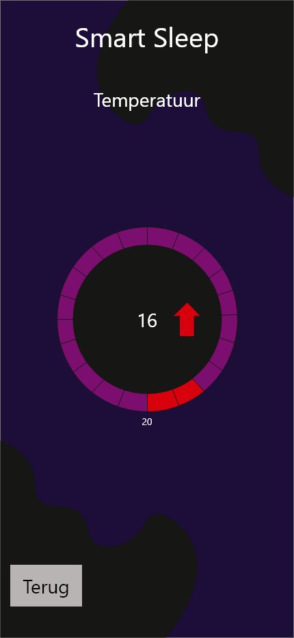

Iot
Voor het vak IOT(internet of things) moesten we een iot product ontwerpen. Dit product moest voldoend aan de 4 ui,s digital,phsyical,concextual en natural. Daarnaast moest ik ook gebruik maken van de 4c,s Composition,consistency en continuity. Ik heb uiteindelijk een bed gemaakt waarmee je handmatig en digitaal de tempratuur van kan aanpassen, het licht verandert aan de hand van t licht buiten en aanpast aan de manier waarop je slaapt.
